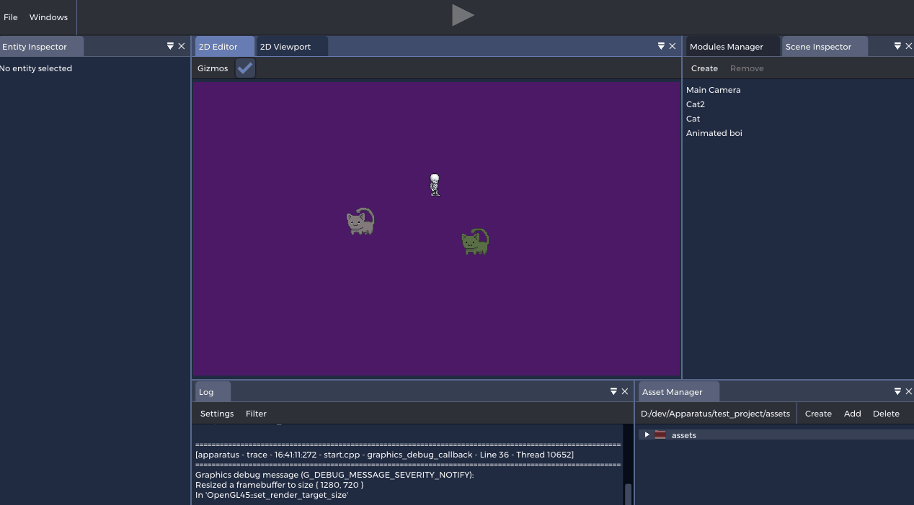
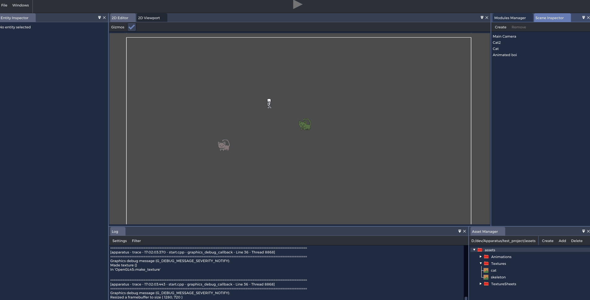
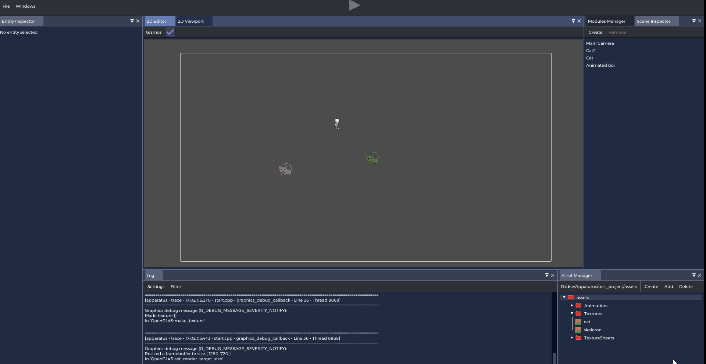

Hobby Projects
This is my hobby projects I've worked on through the years (at least the once I could still find)
[Mid 2020 - Present] Apparatus
With a passion for the technology behind game engines and an ever-evolving
competence in low-level programming I had some new ideas to start on a fresh
new project. Thus, Apparatus was born.
With high ambition I came up with the following core philosophies I wanted
in my new game engine:
Customize everything
Everything should be customizable to the liking of the user! Be that from the color of buttons to the colors of error messages and the size of input fields.
Modular & Extensible
Everything is divided into modules (shared libraries). The idea is that these should be completely removable. If you don't want a renderer for your game you could just unload it (and probably replace it with your own). In general, things are designed to be extensible. For example, anyone can create a new asset by registering an asset loader in the asset manager module.
Modular & Extensible
With dynamically loaded modules we can rebuild a module in runtime and then do a hot reload. This means that we can compile C++ code in runtime. No scripting whatsover - just native C++ code. When building a module there's a parser which goes through the header files for some introspection. This means that there's some simple language extension for creating components and the like in runtime.
No hidden data
There cannot be full modularity if all data is hidden. Everything in the engine is in some way accessible to everything. This does of course mean that's it's very easy to break everything, which is why proper documentation is a must. The engine WILL crash at several occasions, but it will also be designed with this in mind.
Portability
The goal is to support all platforms and the code is design to do so. However at the moment Apparatus really only builds on Windows and most Linux distributions on x64 systems.
Runtime 2D editor
Full customizability

Ecs (flecs)
2D physics (box2d)
Sprite sheet animation

[Early 2019 - Early 2020] Wizzy
This is an Interactive Graphics Application Framework that I worked a bit on my free time while studying game programming at SAE Institute in Brisbane, Australia.
The framework has (as of april 2020):
- VERY basic deferred 3D geometry renderer
- Advanced, featureful & secure Resource Management system (that can bind resources and files, simulating an actual resource directory on the hard drive in real time)
- Platform-abstracted rendering api (currently only with OpenGL 4.5 implementations):
- Textures (created from files via Resource Management)
- Shaders (created from files via Resource Management)
- Render Targets (created from files via Resource Management)
- Fast 2D Batch Renderer
- Clean Wizzy API for using current graphics API without the need of any native code
- Custom serialization language
- Windows support & high potential for linux support (I don't have my linux machine anymore so I haven't been able to test the linux build in a while)
- Runtime lua scripting with Wizzy's own high level wrapper for Script Contexts
- A PropertyTable that can be converted to lua table in the script context and vice versa. This table is what is serialized into the custom serialization language
- Very effective event system
- Input polling
- Pure data-oriented ECS system which uses the event system for ecs Systems to process data
Here's a sample game that will constantly be expanded on to showcase Wizzy's capabilities:
[Mid 2019] GMTK Game Jam 2019 (The One Spear)
For this project, me and a friend participated in a annual 48 hour game jam organized by Mark Brown, the creater of the youtube channel " Game Maker's Toolkit " (GMTK). The theme for the jam was "Only One". Me and my friend had several ideas and ended up sticking with one that would be possible to create within 48 hours. We decided on a 1v1 Player vs Player game with only one weapon - a throwable spear. We decided to give each player one half of the arena that they could move within, and could pick up the spear to throw it towards the player on the other side. This mechanic alone ended up to work quite well and made for a fun game, but we ended up implementing two more major mechanics. The second mechanic we implemented was the powerup that would increase your movement speed/dash speed/throw force. However, we didn't make it a tradional walk-on-to-pick-up type powerup, but instead the player had to shoot a powerup on the opposite player's part of the arena to get it. This added an element of progression to the game and made it more intense as it went on. However, we felt there had to be some more punishments/rewards for your actions so we added another mechanic which made the game very interesting - a moving wall. This wall separated the player areas and moved in favor of the player who's winning - for everytime you hit the other player, the wall moves towards him. Thus, the thrower is rewarded for their good aim, and the opponent is punished for not dodging in time. This also added more to the progression element and had very good synergy with the powerup mechanic as the players now had to make more choices like "Do I go for a powerup and risk giving my opponent a lead?" or "Do I try to get the wall behind the powerups so I can get them for free, but risk giving my opponent a strength advantage?".
This may be my proudest creation as of writing this (May 2020) and it made for a really fun game we ended up playing in our free time and organized tournaments with our mates. For a 48 hour game, it was incredibly polished and enjoyable and had very interesting mechanics that made every match unique.
Here's a sample gameplay video: